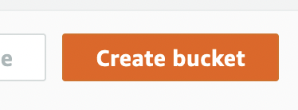

Project Statement
The title of the project is "Machine Learning and Parametric Design for Sustainable Living". What does this actually mean? Parametric design is a paradigm used by architects, designers and planners in order to more effectively connect the ideas of what they are changing in the design with the goals of the project. In this project participants will use both machine learning and parametric design patterns in order to come up with solutions for issues faced in early design phases when forecasting environmental impact early on in design phases, in order to allow for more sustainably designed living.
Timeline
Week 1:
Participants will be, introduced to the project and problem definition
Learn: Logistics for ACM Research, how does this thing work?
Assign: (Research and Literature Review for HW)
Deliverable: Nothing
Week 2:
This week we want to cover what they read in the research papers from week one as well as go over anything that was confusing from those papers.
Learn: The general architecture of the project, everyone from reading the papers at this point should sort of understand the scope as well as the approaches that we're going for.
Assign: Applicable problem (some sort of algorithmic thinking problem, kaggle comp, or lc problem etc.)
Deliverable: Go over what they read last week discuss approaches to the problem.
Week 3:
Go over applicable problem that they were, assigned and see if there were any issues solving this problem. Additionally this week we want to sort of understand the tooling related to what we're doing.
Learn: Basic tooling for the project. (git, python, pip, eda)
Assign: Start work on the project you are free go attempt this research project.
Deliverable: Applicable problem from last week.
Week 4-5:
Work on the core of the project
Learn: From our mistakes.
Assign: Work on the project lol.
Deliverable: Each week need update and code review on where team is at in the process.
Week 6:
Participants should have the MVP completed at least at this point, discuss moving forward with the project, do we want to stack on features or do we want to focus on refining what we have and presentation?
Learn: Where we want to go with the project.
Assign A: A path refers to if the participants want to focus on presentation. In this case at week 6 I will assign them to "refine" the project such that it's in a presentable state.
Assign B: B path refers to if the participants want to continue building. A particular feature will be, assigned and decided on.
Deliverable: Project MVP
Week 7:
At this point we should see the project almost complete, the features we want to add on need to be almost completed. In the case of path A, I want to see that the participants have refined the project to a level that is presentable.
Assign A: Document the project, what is the thought process throughout the entire project, explainable ideas from the project, what were you able to learn form this experience etc, fully understanding the concepts you are presenting is important. Additionally start work on the poster cause that's due soon.
Assign B: Refine feature, or add on additional feature, if they want to add an additional feature, the feature needs to be explainable as well as being able to be, completed within a week.
Deliverable A: Project, needs to be semi done or essentially done (MVP), I want to see the loose end and scuffness being, ironed out at this point.
Deliverable B: The feature being, done or looking like it's going to be, completed in time.
Week 8:
At this point project needs to be coming to a close, path B needs to refine the project and tie up loose ends in the project as well as iron out the scuff.
Assign A: Start on the presentation and continue work on the poster.
Assign B: Clean up the project as well as assign the poster.
Deliverable A: Progress on the poster.
Deliverable B: Project refinement, less scuffed version of project that is presentable, with new added and cool features.
Week 9:
Team needs to work on the presentation, because SyMpOsIuM. This is where the two paths converge again, as path A should be working on a really good poster and path B should be putting together the poster after finishing adding the features to the project.
Assign: Presentation
Deliverable: Poster
Week 10:
Yeah presentation needs to be, done or at least almost complete, I want participants to present to me so that I can help them with presentation (potentially).
Deliverable: Presentation present to me or something like that unsure at this point
Minimum Viable Product
What should the participants be able to produce at least? The minimum viable product for this project will be, a solution that simply correlates features from a dataset to labels in the same dataset that target / indicate environmental impact in some way.
Steps to completing this product
- Find the dataset, that targets the specific indicator that we’re looking for
- Clean the dataset
- Train test split, then train the model that we want to use SVR, XGBR, DL approaches
- Verify results on some set of features
After these steps have been completed, participants will then build on the product, or not if this is all that is completed.
Building on the MVP
Using the MVP participants can start to explore designs for sustainable living in a parametric architecture workbench (FreeCAD or smth) potentially develop a plugin for this software, or create some sort of real world application that assists designers when developing models.
*Note: in Free CAD usually you store parameters in a spreadsheet, these parameters can be fed into the model, tbh I don’t know that much about parametric design. Maybe other parametric software is similar like this.
Alternitive Products / Build Paths
- If the team wants to explore AI/DL then you can also compare performance between ML approaches and AI/DL approaches.
Papers
In this section, I am going to cover various relevant research papers, related to this topic. Note: this information is subject to be inocrrect.
Presentations
Code Demo
The main reason that we used mdBooks is because of the ability to run code inside of the documentation for demo pourposes.
fn main() { let x: i32 = 5; for i in 0..x { println!("Hello!"); } }
Misc. Information Section
This section contains various information that is adjacent to the research project or something.
Host Datasets on S3
A lot of projects in Research use large datasets, because of this we often run into many issues when using git. To get around those issues in the past we may have attempted to use git lfs, or git large file storage, this is not the move as we can only store ~1GB of information in LFS before we get bodied by microsoft. So instead of doing this, data should be store externally in a cloud storage bucket. For this I will be using AWS S3, I think you can also use GCP but that costs money so I'm not gonna do that, azure probably also has something but I have never used azure.
Step 0.
Create an AWS, account sign up for AWS etc. etc. I assume that all humans can do this.
Step 1.
Go to S3, you can find S3 by searching in the tool bar or by going to services -> storage -> s3
Step 2.
Once you are here you can create a bucket by pressing the large orange button that says "create bucket"

Step 3.
Name your bucket something, or just leave it blank for autogen name, the name has to be unique though, first uncheck the section "Block all public accesss" because we want to share the contents of our bucket publiclly with participants. Also check the aknowledgement. Second we want to enable ACLs


Step 4.
Zipping your data, in this case I will upload some example data, to the storage bucket. This example data will be a .zip file you can zip files on UNIX operating systems by typing zip data.zip [target_folder]

Step 5.
Upload this zipped folder to S3 by pressing the large orange "upload" button then pressing "add file" and selecting the file that you just zipped from the computer.

Step 6.
Enable public access via ACL, select the object that we want to have public access for and under the actions section select the option "Make public via ACL"

Finally
You're done, this data has been uploaded and made public via AWS S3, and you can get the URL to access the data by clicking on the object name and finding "object url" under the overview this is the public url to download your data, and can be used by participants:

The link to the example used here is:
https://parametric-design-acm-s22.s3.amazonaws.com/data.zip
Contingincy Plan
Decision tree, where we have different outcomes based on where the team is in the project.
What if my Team is Behind?
If my team is behind the scope of the project will most likely need to be, scaled back, we need to slow down and cover concepts more thuroughly with the team, in the case that the team is behind the lead needs to step in and do more for the project.
Week 1:
The only way that you get behind in week 1 is if you don't show up. The plan here is: email the participant who doesn't show up with warning + information on logistics from week 1 + homework that was, assigned.
Week 2:
If team gets behind this week, ie. was unable to read the research papers / didn't understand the research papers, this is sort of expected and totally fine, if this is the case I will direct to the documentation on my site summirizing my interpretations of research papers, if there are questions concerning particular concepts that are difficult it is then my job to teach those concepts to participants.
Week 3:
If they are unable to solve the homework problem assigned on week 2 ( this is some sort of applicable problem ie. leetcode or kaggle smth ) if they are unable to solve this problem, then we can stack trace on their brain and find out where it went wrong, do some whiteboarding as well as covering basic things such as installing python or something if that's where they got stuck.
Week 4-5:
On a week by week basis I go over their code and progress toward completing the MVP of the project. Falling behind in this phase of the project looks like if they are having issues with understanding how to implement code, having issues with tooling (they don't know how to use pip) something of this sort I can help them get back on track toward the MVP, by covering concepts and allowing them to think out process in psuedo code or giving them lessons on tooling.
Week 6-8:
This is where the project temporarily diverges according to the time line, depending on how the team feels. If the team is behind we will drop to plan A, if team is feeling good then we can go with plan B. At any point if a team on track for B feels that they cannot continue with this track, that a feature will not be, completed or something like this we will drop down to track A, most likely teams will start out on track B then drop down to track B. It is up to my discreation if team should drop to track A or stay on track B.
Week 9:
So yeah the poster and presentation, I mean at this point the only way to get behind is not finishing the poster on time unfortunately this happened last semester, I will be sure to do as much as I can to make sure that this doesn't happen but this may require a little bit of crunch from team unfortunately if they fall behind. But hopefully they won't have to do that and that's what A, B tracks are, designed to prevent.
Week 10:
If team is behind in creating the presentation. empisis on process documentation early on in project to prevent this if team is unable to produce presentation in time then they will have to present what they have, worst case they have to crunch :((
What if my Team is Ahead?
If the team is ahead that's great we can build more and more features onto the MVP creating a more and more impressive project, the only thing here to watch out for is if the team is getting too overzealous with what they think they can acheive, allow them to attempt but don't expect anything, warn them about creep etc. but when it comes time for the poster, team just needs to use what they have instead of continuing to pursue additional features on the project.
AFK Members
4 Strike policy:
- Warning
- Probation mode: individally check up on member
- Ask if they would like to continue + continue individally making sure member is not afk
- Ejection
Distributing the Work
Some members are going to be better at different things naturally, make sure work is, distributed based on what each member can have the most impact doing, even though it's really up to the team to distrubute work, be upfront about what we belive each member should be doing based on their abilities.
Example: Some members have stronger conceptual skills compared to their technical skills (writing code) thus should focus on project docuemtnation directing and communicating concepts with other members who can implement this into code.